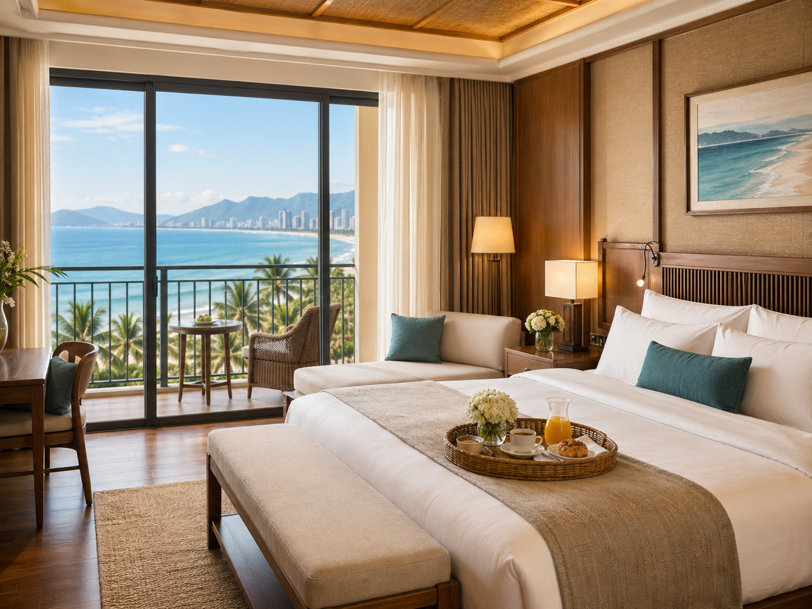
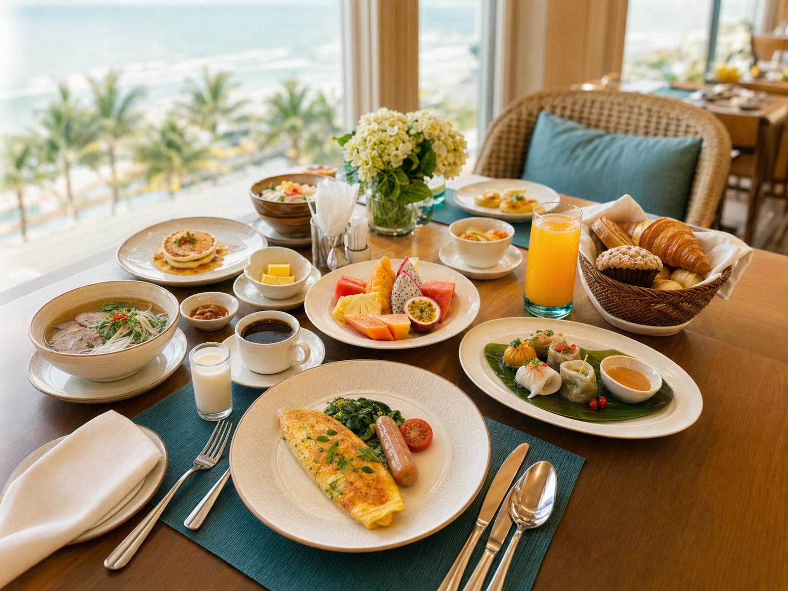

Back to research
A companion framework
Hotel Value Segmentation Framework
We translate guest review language into value-based meaning, organizing what travelers care about most in Da Nang hotels.
Text to value architecture
Linked to canonical segmentation study
For decision-making that delivers


Da Nang - where memorable stays meet meaningful value.
The research moment
Why the framework needs this
Average scores rarely explain why one guest sees value in comfort while another sees it in local food, location, or service care.
This page is a companion interpretation layer. Reported measurement remains in the canonical segmentation study; this framework makes the output easier to discuss and act on.
Evidence boundary: conceptual framework linked to the Da Nang hotel segmentation stream.
What guests are really saying
From guest voices to value dimensions
Reviews are grouped into a practical value vocabulary so hotel teams can see which experiences shape each traveler story.
"The bed was so comfortable. I slept better than at home."
"Staff were so kind and remembered my name."
"Loved the local food recommendations."
"Steps from the beach, and lots of cafes."
"Great value for money. Will definitely return."
Comfort
Restful, high-quality rooms and sleep.
Service Care
Warm, attentive, helpful service.
Local Food
Taste of Da Nang, recommendations.
Location Ease
Close to beach, city sights, convenience.
Ambience
Relaxing, beautiful atmosphere.
Overall Value
Worth the price, meets expectations.
From text signals to
Segment Stories
NLP transforms unstructured review text into value profiles and segment narratives, making guest needs easier to understand and act on.
Relaxed Comfort Seekers
Unwind. Recharge. Indulge.
ComfortAmbienceService Care
- Prioritize restful rooms and tranquil ambience.
- Value thoughtful service and small touches.
- Often leisure travelers, couples, solo relaxers.
Local Experience Hunters
Explore. Taste. Connect.
Local FoodLocation EaseAmbience
- Seek authentic food and local experiences.
- Active explorers, city and nature lovers.
- Value atmosphere and local recommendations.
Reliability-First Travelers
Efficient. Reliable. Seamless.
Service CareComfortLocation Ease
- Need responsive service, comfort, and efficiency.
- Value convenient access and predictable quality.
- Short stays, repeat visits, loyalty driven.
Different guests. Different priorities. Clear actions.
Our framework storyboard
Turning reviews into actions
- 1
Collect Reviews
Gather guest reviews across periods.
- 2
Identify Themes
Extract topics, entities, and sentiment patterns.
- 3
Translate to Value
Map themes to value dimensions.
- 4
Interpret Segments
Group guests into value-based stories.
- 5
Design Actions
Prioritize product, service, and messaging.
Value dimension compositor
What drives guest value?
- Comfort 24%
- Service Care 21%
- Location Ease 18%
- Ambience 14%
- Local Food 13%
- Overall Value 10%
Illustrative weighting for framework communication, not a standalone empirical estimate.
How hotels can act on this
From insight to impact
Product
Invest in features that matter most to your top segments.
Service
Train teams around the moments guests remember.
Messaging
Speak to the values your guests care about clearly and consistently.
See the full story behind the segments
Explore the canonical Da Nang Hotel Segmentation Study for methods, data, and reported results.
Explore the Canonical Study
Da Nang, Vietnam
Better insights.
Better stays.
Stronger hospitality.